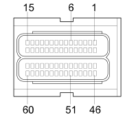

M10A ENGINE MANAGEMENT ECU ( ENGINE )
- Path
- Electrical equipment > 3 CONNECTORS > M INTERMITTENT AND TIMED ELECTRONIC DEVICES,.. > M010 ENGINE MANAGEMENT ECU > M10A ENGINE MANAGEMENT ECU ( ENGINE )
- Kind
- connector pinout (pin -> wire colour -> other end)
- Applies to
- engines: 1.2 8v, 1.6 16v, 1.3 JTD 16V, 1.9 JTD 8V, 1.9 DIESEL; all production periods
- Interactive page
- https://sloeber94.github.io/elrnDB-fDbl/en/#/223005143
Applies to: engines: 1.2 8v, 1.6 16v, 1.3 JTD 16V, 1.9 JTD 8V, 1.9 DIESEL; all production periods

Wiring | Colour |
|---|---|
NERO (black) |
Pin | Cable | Destination | |||
|---|---|---|---|---|---|
Sec.. | Colour | Nodo | Connect. | Pin | |
1 | 1,5 | BL (white with blue stripe) | 2 | ||
4 | 0,75 | HN (grey with black stripe) | 1 | ||
5 | 0,75 | GH (yellow with grey stripe) | X | 6 | |
7 | |||||
3 | |||||
3 | |||||
1 | |||||
6 | 0,5 | GR (yellow with red stripe) | 1 | ||
8 | 0,5 | VG (green with yellow stripe) | 3 | ||
9 | 0,5 | HG (grey with yellow stripe) | 1 | ||
10 | 0,5 | M (brown) | 1 | ||
14 | 0,5 | L (blue) | 5 | ||
15 | 0,75 | SR (pink with red stripe) | 5 | ||
16 | 1,5 | CB (orange with white stripe) | 2 | ||
17 | 1,5 | GN (yellow with black stripe) | 2 | ||
21 | 0,5 | Z (violet) | 1 | ||
23 | 0,5 | RN (red with black stripe) | 1 | ||
24 | 0,5 | N (black) | 2 | ||
25 | 0,5 | SR (pink with red stripe) | 3 | ||
27 | 0,5 | AN (light blue with black stripe) | 3 | ||
29 | 0,5 | VG (green with yellow stripe) | 2 | ||
31 | 1,5 | BV (white with green stripe) | 2 | ||
34 | 0,75 | AR (light blue with red stripe) | 2 | ||
38 | 0,5 | CN (orange with black stripe) | 2 | ||
40 | 0,5 | AV (light blue with green stripe) | 4 | ||
41 | 0,5 | C (orange) | 3 | ||
43 | 0,5 | C (orange) | 1 | ||
46 | 1,5 | L (blue) | 1 | ||
47 | 1,5 | C (orange) | 1 | ||
48 | 1,5 | V (green) | 1 | ||
49 | 1,5 | G (yellow) | 1 | ||
54 | 0,5 | ZB (violet with white stripe) | 1 | ||
56 | 0,5 | SN (pink with black stripe) | 2 | ||
59 | 0,5 | GR (yellow with red stripe) | 2 | ||
Topics linked from this page (17)
- 50 ENGINE
- B1F ENGINE COMPARTMENT JUNCTION UNIT ( ENGINE )
- K030 ENGINE OIL PRESSURE SENSOR (SWITCH)
- K041 AIR FLOW METER
- K46 RPM SENSOR ( ENGINE )
- K47 TIMING SENSOR ( ENGINE )
- K082 TURBOCHARGING SENSOR
- K83 FUEL PRESSURE SENSOR ( ENGINE )
- K84 SPEEDOMETER SENSOR
- K45 ENGINE COOLANT TEMPERATURE SENSOR
- L30 EGR SOLENOID VALVE ( ENGINE )
- M15A HEATER PLUGS CONTROLUNIT ( ENGINE )
- N70A INJECTOR ( COILS AND FUEL INJECTORS )
- N70B INJECTOR ( COILS AND FUEL INJECTORS )
- N70C INJECTOR ( COILS AND FUEL INJECTORS )
- N70D INJECTOR ( COILS AND FUEL INJECTORS )
- N77 FUEL PRESSURE REGULATOR ( ENGINE )